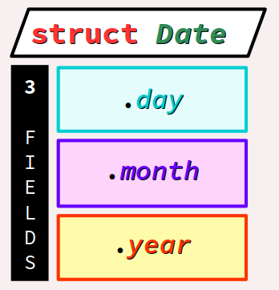
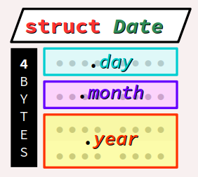
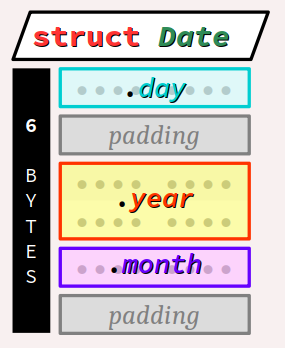
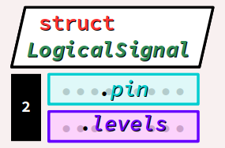
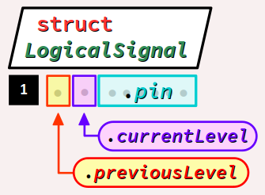

Aux chapitre C5‑III , on a vu qu'un tableau est une donnée structurée dite homogène au sens où toutes les valeurs regroupées dans une telle structure partage le même type.
A contrario, on parle de structure hétérogène pour qualifier une donnée qui agrège des valeurs de types potentiellement différents – et on parle alors de champ (en anglais, field) pour qualifier chaque valeur ainsi agrégée.
Par exemple, pour caractériser un utilisateur lors de l'exécution d'un programme, on peut vouloir regrouper dans une même donnée son nom (une chaîne de caractères), son prénom (idem), son âge (un entier), son numéro de téléphone (un tableau d'entiers), etc.
Bien évidemment, le type de chaque champ doit être codé individuellement, aussi il n'est envisageable d'agréger des champs qu'en petit nombre contrairement à ce que l'on peut faire avec un tableau. Le plus souvent, on définit des structures de moins d'une dizaine de champs.
En revanche, tout champ peut être lui‑même structuré, ce qui permet d'élaborer des structures de données complexes incluant des tableaux.
Dans la plupart des langages de programmation généralistes, une structure hétérogène se déclare ou s'identifie avec le mot‑clef record – traduit en français par enregistrement.
En C et C++, cette notion se décline en deux « familles » de types qui procèdent respectivement :
- par juxtaposition de champs (sequentially allocated fields), avec le mot‑clef
struct; - par superposition de champs (overlapping fields), avec le mot‑clef
union.
Complémentaires des tableaux, les enregistrements par juxtaposition (type struct) sont des structures de données très usitées en programmation. A fortiori, elles constituent le modèle de structuration des attributs d'une classe dans le contexte de la programmation orientée objet. Par conséquent, tout codeur débutant doit en maîtriser les bases avant d'aborder ce paradigme incontournable (cf. chap. C1‑I ).
Dans cet objectif, ce chapitre de cours aborde successivement les trois parties suivantes :
- la déclaration des types
structet de leurs données ; - l'identification des données de type
struct; - la manipulation des données de type
struct.
Quant aux enregistrements par superposition (type union), que peu de langages offrent, ils sont certes d'usage moins courant que ceux par juxtaposition, mais ne doivent pas pour autant être ignorés car ils permettent une utilisation optimale de la mémoire et une polyvalence de formats des données. Ils font l'objet de la quatrième partie de ce chapitre.
Déclaration d'enregistrements par juxtaposition – type struct
En langages C et C++, la déclaration d'un enregistrement par juxtaposition W présente des points communs avec celle d'une énumération (cf. chap. C3‑IV ) :
- on peut procéder par type anonyme ou nommé ;
- on emploie le mot‑clef
structselon les mêmes principes que le mot‑clefenum(cf. chap. C3‑IV ).
Déclaration d'un type struct nommé
En langages C et C++, la déclaration d'un type nommé d'enregistrement par juxtaposition de n champs procède par la forme syntaxique suivante :
struct nom du type {
déclaration de champ 1;
déclaration de champ 2;
…
déclaration de champ n;
};
Il s'agit d'un type dérivé.
Par amalgame avec la notion de classe en programmation orientée objet, on emploie parfois le terme de membre pour désigner tout champ d'un type struct.
Sur cette forme syntaxique, on peut apporter les précisions suivantes :
- Le nom du type est l'identificateur choisi par le codeur pour désigner le nouveau type structuré déclaré.
- Chaque déclaration de champ reprend la syntaxe générale d'une déclaration de variable (cf. chap. C2‑III ) mais sans initialisation.
Lorsque des champs consécutifs sont de types identiques, ils peuvent être codés séquentiellement (comme pour des déclarations de données – cf. chap. C2‑III ), c'est‑à‑dire de la forme :
descripteur de type champ x, champ x+1, …;
Néanmoins, cette pratique n'est pas recommandée de façon générale car elle est réputée moins lisible que celle qui consiste usuellement à consacrer une ligne par champs.
Pour mémoriser des dates calendaires dans un format habituel – jour, mois, année – on peut déclarer préalablement le type structuré Date ci‑dessous, composé de 3 champs day, month et year :
#include <stdint.h>
struct Date {
int8_t day; // 1 to 31
int8_t month; // 1 to 12
int16_t year;
};

Par rapport à un tableau de trois éléments comme int16_t[3], l'emploi d'un type structuré celui déclaré comme ci‑dessus présente deux avantages :
- être plus économe en mémoire, puisque les espaces réservés au numéros de jour et de mois sont chacun codés avec le plus petit type élémentaire du langage (
int8_t) ; - donner des noms explicites aux composantes de la données, plutôt que de simples numéros d'ordre d'éléments du tableau, ce qui rendra plus lisible le codage des manipulations de ces champs.
Remarques.
- Tous les champs du type
Datesont déclarés dans un type signé bien que les valeurs qu'ils contiennent soient a priori positives. Rappelons que ce choix est motivé par des considérations de sécurité au regard des opérations qui pourraient être codées sur ces valeurs, notamment les comparaisons (cf. chap. C3‑II ) et les boucles de décrémentation à zéro (cf. chap. C3‑II ). - La taille du type structuré
Dateest a priori de seulement 4 octets, car les deux champsdayetmonth, de typeint8_t(1 octet chacun), complètent idéalement le champyearde typeint16_t(2 octets) pour former un mot mémoire de 4 octets complet sur une architecture à 32 bits. - Le champ
yearne peut pas être encodé sur seulement 8 bits puisque les valeurs d'années dépassent 255. On choisit donc le typeint16_tqui encode des valeurs jusqu'à 32 767, ce qui est largement suffisant. - Pour illustrer la remarque générale supra, puisque les deux champs consécutifs
dayetmonthsont de même type, on aurait pu opter pour une déclaration séquentielle comme ci‑dessous (ligne nº 4) :
struct Date {
int8_t day, month;
int16_t year;
};
Déclaration via le mot‑clef typedef
Comme pour un type énuméré (cf. chap. C3‑IV ), même si une déclaration de type struct n'est pas anonyme, il est préférable de le déclarer comme un type synonyme, c'est‑à‑dire via le mot‑clef typedef, avec la forme syntaxique :
typedef struct {
déclaration de champ 1;
déclaration de champ 2;
…
déclaration de champ n;
} nom du type;
où le nom du type est codé à la fin de la déclaration (et non pas après le mot‑clef struct) pour obtenir respectivement la taille et la contrainte d'alignement du type déclaré.
En effet, seule cette forme permet par la suite d'appliquer les opérateurs sizeof et _Alignof (alignof en C++) à l'identificateur du type struct déclaré.
Stockage en mémoire – contraintes d'alignement
Dans la plupart des implémentations, les valeurs des champs d'une donnée déclarée de type struct seront stockées en mémoire les unes à la suite des autres dans l'ordre de la déclaration des champs.
L'opérateur d'adresse & peut s'appliquer aux identificateurs de champs d'une donnée déclarée de type struct – sauf pour les champs de bits.
Néanmoins, comme pour des données de types élémentaires, des contraintes d'alignement peuvent exister, selon le compilateur employé et l'architecture de la machine cible (cf. chap. C3‑I ). Pour y satisfaire, des octets intercalaires (padding bytes) sont très souvent insérés entre les champs par le compilateur et alors, la taille du type est supérieure à la somme de celles de ses champs.
Reprenons le cas du type structuré synonyme Date déclaré à l'exemple précédent (cf. supra ).
On va observer la taille en mémoire de ce type en fonction de l'ordre de déclaration de ses champs. On fait l'hypothèse d'une machine cible à architecture 32 ou 64 bits et d'un compilateur de la famille GCC – typiquement, c'est ce qu'on a avec OnlineGDB.
- Avec le code ci‑dessous , on obtient bien une taille de 4 octets, avec un stockage en mémoire schématisé par la figure à droite.
- Mais en remplaçant la déclaration ci‑dessus par les lignes ci‑dessous – codées dans un ordre inadéquat pour les besoins de la démonstration – on obtient alors une taille de 6 octets, avec deux octets intercalaires (padding bytes) comme illustré sur la figure à droite :
#include <stdint.h>
#include <stdio.h>
typedef struct {
int8_t day; // 1 to 31
int8_t month; // 1 to 12
int16_t year;
} Date;
int main() {
printf("%zu\n", sizeof(Date));
}

typedef struct {
int8_t day; // 1 to 31
int16_t year; // misplaced!
int8_t month; // 1 to 12
} Date;

En revanche, dans un programme pour carte Arduino Uno, le type Date garderait la même taille de 4 octets quel que soit l'ordre de déclaration de ses champs, puisqu'il n'y a aucune contrainte d'alignement sur une architecture à 8 bits.
Complexité potentielle des types structurés
En langages C et C++, par composition de types dérivés, on peut construire des types très complexes : des structures de structures, de tableaux, etc. y compris des structures récursives comme les listes chaînées, par le biais de pointeurs (un champ pointant sur une structure de même type).
Comme presque toujours, il n'existe dans la norme pas de limites (mais seulement des minima) – ni de complexité, ni de taille – dans la construction d'un type struct. Mais bien entendu, ces aspects dépendent de l'implémentation, et on est forcément limité par la capacité mémoire de la machine cible (cf. chap. C3‑I ).
Déclaration d'une donnée d'un type struct déclaré
En langage C, la déclaration d'une donnée – constante ou variable – d'un type structuré d'enregistrement par juxtaposition préalablement déclaré (mais pas en synonyme) procède selon la forme syntaxique :
[const] struct
nom du type
identificateur
[ = {liste d'expressions}
] ;
Sur cette forme syntaxique, on peut apporter les précisions suivantes :
- L'éventuel modificateur
constcode le fait qu'il s'agit d'une constante (comme pour toute déclaration de donnée). - Le mot‑clef
structdoit être obligatoirement rappelé – alors qu'il est facultatif en C++ (comme le mot‑clefenumavec un type énuméré – cf. chap. C3‑IV ). - Le nom du type est un identificateur de type
structdéjà déclaré. - L'identificateur est le nom de la variable ici déclarée.
- La liste d'expressions (optionnelle ou partielle s'il s'agit d'une variable) code les valeurs initiales des champs de la donnée, dans l'ordre de leurs déclarations respectives dans le type.
struct doit être omis dans la déclaration d'une donnée structurée si son type a été déclaré comme synonyme via le mot‑clef typedef. Après la déclaration du type structuré Date (non synonyme) de l'exemple initial , on peut coder la déclaration de diverses données de ce type, comme les trois dates proposées dans le code ci‑dessous :
const struct Date productionDate = {27, 3, 2019};
struct Date lastCheckDate = {15, 9, 2019};
struct Date nextCheckDate = {15, 3, 2020};
On aurait aussi pu coder de façon séquentielle la déclaration des deux variables lastCheckDate et nextCheckDate, comme ci‑dessous (lignes nº 11 & 12) :
const struct Date productionDate = {27, 3, 2019};
struct Date lastCheckDate = {15, 9, 2019},
nextCheckDate = {15, 3, 2020};
Comme pour un type énuméré, on peut adopter d'autres formes de déclaration.
- On peut enchaîner la déclaration d'une donnée à la suite de celle de son type dans la même instruction, comme dans l'exemple ci‑dessous :
- On peut également procéder par typage anonyme, c'est‑à‑dire en omettant le nom du type après le mot‑clef
structcomme dans l'exemple ci‑dessous :
struct Date {
int8_t day; // 1 to 31
int8_t month; // 1 to 12
int16_t year;
} const productionDate = {27, 3, 2019};
struct {
int8_t day; // 1 to 31
int8_t month; // 1 to 12
int16_t year;
} const productionDate = {27, 3, 2019};
Initialisation séquentielle des champs d'une donnée de type struct
Comme pour une variable de type tableau (cf. chap. C5‑III ), on peut coder l'initialisation séquentielle des champs d'une donnée de type struct sous la forme d'une liste d'expressions évaluables. Toutefois :
- cela est possible seulement dans le cadre d'une déclaration ; en effet, même si on peut coder des affectations globales sur des données de type
struct(contrairement aux données de type tableau), on ne peut pas former des « constantes littérales » d'un tel type ; - l'initialisation peut être partielle – dans ce cas, les champs non initialisés prennent la valeur
0par défaut si au moins un champ est initialisé.
Et en l'absence totale d'initialisation, comme pour toute variable déclarée, les champs prennent une valeur par défaut en fonction de la classe d'allocation (cf. chap. C4‑II ) :
- la valeur nulle pour une variable de classe statique,
- une valeur indéterminée (a priori différente à chaque champ) pour une variable de classe automatique.
Il est donc préférable de procéder à leur initialisation complète autant que possible.
On verra par la suite qu'il existe aussi une syntaxe alternative pour initialiser les valeurs des champs d'une variable de type struct de façon sélective et dans un ordre quelconque, en utilisant les identificateurs des champs .
Déclaration de champs de bits
Dans un type struct, un champ de bits est un champ dont la taille mémoire est définie au bit près. Un tel champ se déclare via la forme syntaxique suivante :
descripteur de type entier nom du champ :
largeur du champ;
Sur cette forme syntaxique, on peut apporter les précisions suivantes.
- Le descripteur de type entier définit la largeur enveloppe et le format d'encodage (signé ou non) dans lesquels sont encodées les valeurs du champ (cf. chap. C3‑II ).
- Le nom du champ est l'identificateur désignant le champ (comme pour tout autre champ).
- La largeur du champ code la valeur strictement positive du nombre de bits du champ. Elle doit être :
Par principe, tout champ de bit est réputé sans adresse, car il peut commencer en « milieu » d'octet. Toute expression dans laquelle l'opérateur d'adresse & est appliqué à un champ de bit est donc rejetée par le compilateur.
De même, les opérateurs sizeof et _Alignof (alignof en C++) ne sont pas applicables à un champ de bits.
L'emploi des champs de bits peut poser des problèmes de portabilité, l'encodage des valeurs des champs étant susceptible de varier d'une implémentation à une autre – en particulier l'ordre des bits, qui peut procéder en convention big endian ou little endian (cf. chap. C3‑IX ). Mais en règle générale :
- la taille maximale d'un champ est celle du type
long long, c'est‑à‑dire 64 bits ; - le format d'encodage des valeurs d'un champ dans ses bits est le même que celui des types entiers – c'est‑à‑dire, quelle que soit l'implémentation, le binaire naturel pour les champs non signés et le complément à deux pour les champs signés (cf. chap. C3‑II ) ;
- lorsqu'un champ de 1 bit est déclaré de type signé, ses deux seules valeurs possibles sont
0et-1!
Au chapitre C4‑V , pour gérer les signaux logiques reçus en entrée (boutons‑poussoirs, capteurs TOR, etc.) sur les broches du port numérique d'une carte Arduino – notamment, pour actualiser les valeurs des niveaux logiques, détecter les fronts montants et descendants, etc. – on a codé un module de bibliothèque. Dans son fichier d'en‑tête LogicalSignals.h, on a déclaré le type structuré LogicalSignal :
typedef struct {
uint8_t pin; // pin number on the board
byte levels; // only bit 0 and 1 used
} LogicalSignal;

Ce type est composé des 2 champs occupant 1 octet chacun, soit au total 2 octets :
- le champ
pincode le numéro de broche de la carte sur laquelle les signaux logiques sont reçus ; - quant au champ
levels, il code sur ses bits de rangs0et1les niveaux logiques respectivement actuel et précédent lus sur la broche ; les autres bits sont inusités.
pin ne requiert en fait que 6 bits (26 = 64 numéros codables) ; En utilisant des champs de bits comme ci‑dessous, on peut donc réduire à 1 seul octet la taille occupée en mémoire par les données de ce type :
typedef struct {
uint8_t pin : 6;
uint8_t currentLevel : 1;
uint8_t previousLevel : 1;
} LogicalSignal;

Par ailleurs, cette solution apporte un surcroît de lisibilité pour les champs dédiés à l'enregistrement des niveaux logiques, car ils ont maintenant des noms explicites, contrairement à de simples rangs de bits. On
verra infra que le codage des fonctions comme updateSignal ou risingEdge prennent des formes très usuelles (similaires à celles présentées au chap. C2‑VIII , plus intuitive qu'avec l'emploi d'opérations bit‑à‑bit ).
Remarque. Il est ici indispensable dimensionner au plus juste les champs du type LogicalSignal. En effet, si tel n'était pas le cas, cela impacterait la taille et la contrainte d'alignement sur une machine à architecture 32 bits.
Par exemple, sur une carte Arduino Due, en codant ces champs de type unsigned (donc implicitement int), on aurait une taille et une contrainte d'alignement de 4 octets, ce qui ôterait presque tout intérêt au recours à une structure à champs de bits.
Intercalage de champs de bits de rembourrage
Comme on l'a vu supra , la taille mémoire requise pour une donnée déclarée de type struct dépend de l'implémentation, avec d'éventuelles contraintes d'alignement.
Néanmoins, en tenant compte de ces contraintes, on peut optimiser la répartition des champs sur les octets alloués par le compilateur. En particulier, on peut éviter que les valeurs de deux champs consécutifs soient à cheval sur un même octet en insérant entre eux un champ anonyme de bits de rembourrage (en anglais, bit stuffing field).
On peut ajouter autant de champs de rembourrage que nécessaire.
Considérons de façon académique le type structuré FooBar W constitué de deux champs de 12 bits foo et bar, chacun de type unsigned.
Ces deux champs totalisent 24 bits (soit seulement 3 octets), mais sur un PC à architecture 32 ou 64 bits, la taille du type FooBar sera de 4 octets (soit 32 bits). On peut le vérifier en exécutant sur OnlineGDB le programme ci‑dessous. Ce dernier utilise une fonction scanByte qui met en œuvre un pointeur incrémental p de type byte * pour scanner octet par octet l'espace mémoire alloué à une variable. Elle est appelée à la ligne nº 22.
#include <stdio.h>
#include <stdlib.h>
typedef struct {
unsigned foo : 12;
unsigned bar : 12;
} FooBar;
/* utilities to scan memory */
typedef unsigned char byte;
void scanBytes(byte * startByte, size_t nbOfBytes) {
for (byte * p = startByte; p < startByte + nbOfBytes; p++) {
printf ("%p %02X\n", p, *p);
}
}
int main(void) {
FooBar fooBar = {0xCBA, 0xFED};
printf("size: %zu bytes, \t align: %zu bytes\n",
sizeof(fooBar), _Alignof(fooBar));
scanBytes((byte*) &fooBar, sizeof(fooBar));
return 0;
}
On obtient une sortie typiquement comme (les adresses changent d'une exécution à l'autre) :
size: 4 bytes, align: 4 bytes 0x7ffcb4569714 BA 0x7ffcb4569715 DC 0x7ffcb4569716 FE 0x7ffcb4569717 00
où l'on voit que les valeurs des champs foo et bar (respectivement 0xCBA et 0xFED) sont à cheval sur le 2e octet alloué à la donnée fooBar.
Quant au 4e octet, il est laissé vacant pour satisfaire à la contrainte d'alignement imposée par l'architecture de la machine cible. Il constitue encore une fois ce qu'on appelle un octet intercalaire (padding byte – cf. chap. C3‑I ).
Pour optimiser l'usage de l'espace mémoire alloué à fooBar, on peut insérer dans la déclaration du type FooBar un champ supplémentaire de 4 bits de rembourrage entre les deux champs foo et bar, avec la déclaration ci‑dessous :
typedef struct {
unsigned foo : 12;
unsigned : 4; // bit stuffing
unsigned bar : 12;
} FooBar;
On obtient alors une sortie typiquement comme :
size: 4 bytes, align: 4 bytes 0x7ffd07036b84 BA 0x7ffd07036b85 0C 0x7ffd07036b86 ED 0x7ffd07036b87 0F
où l'on voit que les valeurs des champs foo et bar ne sont plus à cheval sur le 2e octet, grâce aux 4 bits de rembourrage.
Par rapport à la déclaration initiale du type FooBar, cette deuxième solution présente l'avantage de permettre un accès aux valeurs des champs par pointeurs – ce qui, dans le cas général, n'est pas possible pour des champs de bits. Cette possibilité vient du fait que maintenant, les champs sont indexés sur des octets distincts. On peut donc accéder à ces champs via un pointeur correctement dimensionné, comme dans le programme ci‑dessous :
#include <stdio.h>
#include <stdlib.h>
typedef struct {
unsigned foo : 12;
unsigned : 4; // bit stuffing
unsigned bar : 12;
} FooBar;
/* utilities to scan memory */
typedef unsigned short word16_t;
void scanWord16(word16_t * startWord, size_t nbOfWords) {
for (word16_t * p = startWord; p < startWord + nbOfWords; p++) {
printf ("%p %04X\n", p, *p);
}
}
int main (void) {
FooBar fooBar = {0xCBA, 0xFED};
scanWord16((word16_t*) &fooBar, 2);
return 0;
}
qui produit une sortie typiquement comme :
0x7ffcfa67e2d4 0CBA 0x7ffcfa67e2d6 0FED
On aurait obtenu la même répartition optimisée des champs foo et bar sur l'espace mémoire alloué à la donnée fooBar en choisissant mieux le type enveloppe des champs. En effet, sur une architecture à 32 ou 64 bits, le type unsigned est encodé sur 32 bits, ce qui est surdimensionné pour des champs de 12 bits. Il est préférable de choisir le type unsigned short, qui est encodé sur 16 bits, comme ci‑dessous :
typedef struct {
unsigned short foo : 12;
unsigned short bar : 12;
} FooBar;
De plus, cette solution présente l'avantage de conférer au type FooBar une contrainte d'alignement de seulement 2 octets.
Identification des données de type struct
Identification de la valeur d'une donnée de type struct
En langages C et C++, la valeur « globale » d'une donnée déclarée de type struct est directement accessible par son identificateur.
Dans le code source d'un programme, un tel identificateur a le statut d'une l‑value : il est donc possible d'opérer sur lui une affectation – cf. infra .
Cette possibilité constitue un avantage notable par rapport aux données de type tableau dont les identificateurs sont, rappelons‑le, presque toujours convertis en pointeurs (cf. chap. C5‑III ). En particulier, cela autorise aussi le passage d'argument ou le retour de valeur d'une fonction de données déclarées de types struct.
En revanche, comme pour les tableaux, il n'est pas possible :
- de former des constantes littérales de types
struct; - de coder des opérations élémentaires (addition, etc.) sur de telles valeurs, tout simplement parce que ces opérations ne peuvent pas être définies dans un cas général.
Pour manipuler les données de types struct, il est donc nécessaire de passer par leurs champs, donc de pouvoir identifier ces derniers.
Identification des valeurs des champs d'une donnée de type struct
En langages C et C++, on accède à la valeur d'un champ d'une donnée déclarée de type struct en concaténant l'identificateur de la donnée et l'identificateur du champ avec l'opérateur de sélection ou d'accès (en anglais, member access operator). Cet opérateur est codé par le symbole . C.
La forme syntaxique de l'expression d'identification du champ d'une donnée de type struct est donc la suivante :
identificateur de la donnée.identificateur du champ
Une telle expression forme une l‑value si le type du champ le permet – et donc en particulier, pas s'il s'agit d'un tableau. Lorsqu'un champ est de type élémentaire, il est donc manipulable comme n'importe quelle donnée de ce type via son expression d'identification.
Dans le tableau de classification des opérateurs du langage C (cf. chap. C2‑IV ), l'opérateur de sélection . possède :
- le rang 1 de priorité,
- le sens d'associativité de gauche à droite.
Ces aspects sont essentiels pour comprendre et coder correctement des expressions où l'opérateur de sélection est composé :
- avec lui‑même, si le champ d'une donnée de type
structest lui‑même d'un type d'enregistrement structuré ; - avec l'opérateur d'indexation
[]si le champ d'une donnée est de type tableau ; - avec l'opérateur de déréférencement
*si le champ d'une donnée est un pointeur, etc.
Considérons la donnée productionDate déclarée supra de type structuré Date déclaré comme un synonyme. On identifie ses champs day, month et year respectivement par les expressions :
-
productionDate.day -
productionDate.month -
productionDate.year
On peut donc les employer dans un programme comme par exemple dans le test ci‑dessous :
if (productionDate.year < 2019) …
Initialisation sélective des champs d'une donnée de type struct
L'identification sélective des champs d'une donnée de type struct permet de coder dans sa déclaration l'initialisation ciblée de tel ou tel champ, en alternative au procédé séquentiel d'initialisation anonyme exposé supra .
Dans la liste des expressions d'initialisation, on peut coder n'importe quelle expression de cette liste via la forme syntaxique :
.identificateur de champ = expression
où l'expression donne la valeur initiale à affecter au champ. Mais, attention à l'ordre de codage de ces initialisations :
- si tous les champs sont ainsi initialisés de façon sélective, l'ordre des expressions est libre ;
- dans le cas contraire, il faut respecter l'ordre des champs dans la déclaration du type.
const Date productionDate = {.year = 2019, .day = 27, .month = 3};
ou encore – même si c'est bien moins lisible :
const Date productionDate = {27, 3, .year = 2019};
En revanche, il n'est pas possible de coder :
productionDate = {.year = 2019, 27, 3}; // WRONG ORDER!
En effet, exécutée avec OnlineGDB, le compilateur GCC émet deux avertissements :
main.c:10:44: warning: excess elements in struct initializer main.c:10:48: warning: excess elements in struct initializer
et si l'on code dans la fonction main l'instruction d'affichage ci‑dessous :
printf("%02u/%02u/%u\n", productionDate.day, productionDate.month, productionDate.year);
On obtient en sortie standard une date dont les champs day et month ont été affectés d'une valeur 0 :
00/00/2019
ce qui est évidemment problématique.
Accès à une donnée de type struct et de ses champs par pointeur
Une donnée déclarée de type struct est, comme toutes les autres, également accessible par son adresse, via l'opérateur d'adresse & (cf. chap. C5‑I ) appliqué à son identificateur.
On rappelle qu'une expression de la forme &identificateur constitue un pointeur qui :
Dans l'exemple précédent , après la déclaration de la donnée lastCkeckDate de type Date, on peut déclarer un pointeur sur elle comme ci‑dessous :
Date * p_date = &lastCheckdate;
Identification des champs par pointeur
Il est déconseillé de vouloir accéder aux adresses des champs de la donnée en présupposant leurs positions en mémoire : en effet, cet aspect dépend de l'implémentation. Pour effectuer une telle opération, il est bien plus fiable de déréférencer un pointeur sur la donnée puis appliquer l'opérateur de sélection, conformément à la syntaxe ci‑dessous :
(*pointeur sur la donnée structurée).identificateur de champ
en remarquant que les parenthèses sont ici obligatoire, car l'opérateur de déréférencement est moins prioritaire que l'opérateur de sélection.
Cette technique d'identification par déréférencement d'un pointeur étant d'usage très courant, le langage C met à disposition du codeur un opérateur spécifique dit de déréférencement structurel codé ->, trivialement nommé « opérateur flèche » (en anglais, arrow operator) qui effectue la composition d'opérations ci‑dessus via la syntaxe :
pointeur sur la donnée structurée ->
identificateur du champ
Comme l'opérateur de sélection, l'opérateur « flèche » -> possède (cf. chap. C2‑IV ) :
- le rang 1 de priorité,
- le sens d'associativité de gauche à droite.
On souhaite définir des dates d'échéances trimestrielles pour le remboursement d'un crédit, fixée au 5 du premier mois de chaque trimestre. Dans le programme ci‑dessous (cf. la ligne nº 12), on déclare donc un tableau dueDate de 4 éléments d'un type struct synonyme Date issu d'un exemple précédent.
Dans une première version de la fonction main du programme, on code dans une boucle for de façon usuelle – c'est‑à‑dire avec l'opérateur d'indexation [] et l'opérateur de sélection . – l'affectation et l'affichage des valeurs des champs des éléments de ce tableau.
#include <stdio.h>
#include <stdint.h>
#define nbOfElements(array) (sizeof(array)/sizeof(array[0]))
typedef struct {
int8_t day; // 1 to 31
int8_t month; // 1 to 12
int16_t year;
} Date;
Date paymentDate[4];
int main() {
for (int k = 0; k < nbOfElements(paymentDate); k++) {
paymentDate[k].day = 5;
paymentDate[k].month = 3 * k + 1;
paymentDate[k].year = 2022;
printf("%02u/%02u/%u\n", paymentDate[k].day, paymentDate[k].month, paymentDate[k].year);
}
}
En ayant recours à un pointeur initialisé sur le premier élément du tableau (cf. ci‑dessous la ligne nº 15), et en utilisant l'opérateur « flèche », la fonction main du programme ci‑dessus peut se coder comme ci‑dessous :
int main() {
Date * const p_firstPaymentDate = &paymentDate[0];
for (Date * p = p_firstPaymentDate; p < p_firstPaymentDate + nbOfElements(paymentDate); p++) {
p -> day = 5;
p -> month = 3 * (p - p_firstPaymentDate) + 1;
p -> year = 2022;
printf("%02u/%02u/%u\n", p -> day, p -> month, p -> year);
}
}
Cette solution de codage présente une bonne lisibilité sauf à la ligne nº 18 pour déterminer le numéro d'itération de la boucle, ce qui nécessite une opération de décalage p - p_firstPaymentDate.
Manipulation des données de type struct
Comme cela a été évoqué supra , en langages C et C++, l'identificateur d'une donnée déclarée de type struct donne directement accès à sa valeur et constitue de ce fait une l‑value. Il peut donc faire l'objet de certaines opérations globales :
- une affectation,
- une transmission d'argument de fonction par valeur,
- un retour de valeur par une fonction.
Et par ailleurs, comme pour toute donnée, il est aussi possible d'opérer sur une donnée déclarée de type struct via des pointeurs ou des références, en particulier pour les transmissions d'argument de fonction. Cette approche est d'autant plus recommandée que la structure est complexe et lourde.
En revanche, on verra que d'autres opérations, notamment les comparaisons et les conversions, ne sont pas codables de façon globale. Elles doivent être mises en œuvre au niveau des champs ou via des pointeurs – et avec beaucoup de précautions.
Affectation d'une donnée de type struct
Dans le bloc de définition d'une fonction (main ou autre), on peut coder une expression d'affectation via la forme syntaxique générale :
l‑value = r‑value
où :
- la l‑value est un identificateur de variable déclarée de type
struct(ou une expression qui déréférence un pointeur sur une telle variable) - la r‑value est une expression dont la valeur est de même type que la variable affectée.
En effet, on rappelle qu'aucune conversion implicite n'est opérée sur des valeurs de types dérivés.
Précisions que dans une affectation sur une donnée de type struct, la r‑value peut être :
- l'identificateur d'une donnée déclarée – c'est le cas le plus usuel ;
- un appel de fonction qui rend une valeur du même type
struct; - ou encore un déréférencement d'un pointeur sur une donnée du même type
struct.
En revanche, la r‑value ne peut pas être codée comme une liste de valeurs de champs comme dans le cas d'une initialisation.
Suite à la déclaration de données de type struct synonyme Date supra , on peut coder dans le corps d'une fonction une instruction d'affectation directe comme :
lastCheckDate = nextCheckDate;
Et suite à la déclaration d'un pointeur p_date de type Date*, on peut aussi coder une affectation comme :
lastCheckDate = *p_date;
ou encore :
*p_date = lastCheckDate;
si p_date ne pointe pas sur une donnée constante.
La possibilité de coder une affectation globale sur une donnée de type struct peut être employée pour contourner l'impossibilité d'une telle opération pour une donnée de type tableau. Il suffit de procéder par encapsulation, en déclarant un type struct ayant pour unique champ le type tableau en question.
Une telle astuce ne présente pas d'intérêt systématique, dans la mesure où l'affectation à un tableau des valeurs d'un autre tableau s'opère très facilement par le biais d'une fonction (cf. chap C5‑IV ). Néanmoins, elle peut permettre de gagner en rapidité d'exécution pour des tableaux de grandes tailles.
Transmission d'un argument de type struct d'une fonction
Rappelons (cf. chap. C4‑I ) que lors d'un appel de fonction, la transmission d'un argument effectif à son argument formel correspondant :
- sous‑tend fondamentalement une affectation – a minima, donner comme valeur initiale à l'argument formel la valeur de l'argument effectif au moment de l'appel ;
- peut procéder de trois façons différentes – par valeur (transmission par défaut), par référence et par adresse.
Transmission par valeur d'un argument de type struct
Dans le cas d'un argument de type struct, la transmission par valeur requiert la même condition essentielle que pour une affectation : que dans toute instruction d'appel, l'argument effectif soit du même type que celui de l'argument formel dans l'en‑tête de la fonction.
En termes de codage de la fonction elle‑même, il n'y a aucune particularité syntaxique par rapport à un autre type d'argument.
Et puisqu'il s'agit transmission par valeur, rappelons que même si l'argument effectif est un identificateur de variable déclarée, cette dernière n'est pas modifiée lors de l'exécution du code de fonction.
Suite à la déclaration supra du type struct LogicalSignal pour l'environnement Arduino, on peut aisément recoder (cf. chap. C4‑VI ) d'une manière bien plus lisible les fonctions de la bibliothèque LogicalSignal. Prenons le cas de la fonction risingEdge qui retourne la valeur booléenne true à l'occurrence d'un front montant sur le signal de tension d'une broche d'entrée du port numérique de la carte :
bool risingEdge(LogicalSignal inputSignal) {
return (inputSignal.previousLevel == LOW &&
inputSignal.currentLevel == HIGH);
}
Cette fonction ayant seulement besoin de lire les valeurs des champs de son argument, la transmission par valeur suffit.
Une expression d'appel de cette fonction se code dans difficulté aucune, par exemple :
risingEdge(buttonSignal)
ou buttonSignal est une variable de type LogicalSignal préalablement déclarée.
Transmission par référence (en C++) d'un argument de type struct
La transmission par référence d'un argument de type struct procède exactement comme pour n'importe quel autre type de données acceptant la déclaration d'une référence (cf. chap. 4‑I ). Rappelons qu'elle n'est possible qu'en C++, et pas en C.
Comme pour la transmission par valeur, on a la même condition d'identité de type entre l'argument effectif dans les expressions d'appel et l'argument formel dans l'en‑tête de la fonction.
Suite à la déclaration supra du type structuré LogicalSignal pour l'environnement Arduino, on peut aussi recoder (cf. chap. C4‑VI ) d'une manière bien plus lisible la fonction updateSignal qui effectue la mise à jour des niveaux logiques de tension mémorisés sur une broche d'entrée du port numérique de la carte :
void updateSignal(LogicalSignal & inputSignal) {
inputSignal.previousLevel = inputSignal.currentLevel;
inputSignal.currentLevel = digitalRead(signal.pin);
}
Appliqué à la variable buttonSignal de type LogicalSignal déclarée supra, une instruction d'appel d'une telle fonction se code simplement :
updateSignal(buttonSignal);
Transmission par adresse d'un argument de type struct
La transmission par adresse d'un argument de type struct procède exactement comme pour n'importe quel autre type de donnée, élémentaire ou dérivé (cf. chap. 5‑II ). Elle opère en langages C et C++.
Pour coder une telle transmission, il suffit que l'argument effectif d'appel soit un pointeur sur une variable de même type quecelui de l'argument formel dans l'en‑tête de la fonction.
Reprenons le codage de la fonction updateSignal proposée supra pour illustrer la transmission par référence. Pour une transmission par adresse, on peut utiliser l'opérateur « flèche » -> (cf. supra ) qui améliore la lisibilité du code :
void updateSignal(LogicalSignal * p_inputSignal) {
p_inputSignal -> previousLevel = p_inputSignal -> currentLevel;
p_inputSignal -> currentLevel = digitalRead(p_inputSignal -> pin);
}
Quant à un appel de cette fonction pour la variable buttonSignal de type LogicalSignal, il se code bien entendu en utilisant l'opérateur d'adresse & :
updateSignal(&buttonSignal);
Retour d'une valeur de type struct par une fonction
Le codage d'une fonction qui retourne des valeurs de type struct suit le même principe qu'avec des valeurs de types élémentaires (cf. ).
En effet, contrairement aux valeurs de types tableau, il n'est pas nécessaire de passer la structure en argument de la fonction puisque les types struct acceptent les affectations globales.
La seule « difficulté » vient du fait que l'expression de retour, codée après le mot‑clef return, ne peut pas être formée par une liste de valeurs.
Mais cette expression de retour peut être codée par :
- un identificateur d'une variable locale déclarée de type
structdans le corps de la fonction ; - un appel de fonction qui elle‑même retourne une donnée de type
struct; - un déréférencement de pointeur sur une donnée déjà déclarée de type
struct.
sachant que ce type struct doit dans tous les cas être identique à celui codé dans l'en‑tête de la fonction.
Suite à la déclaration supra du type structuré synonyme Date, on code une fonction firstDayOfMonth qui retourne comme valeur le 1er jour du mois d'une date passée comme argument de cette fonction :
Date firstDayOfMonth(Date givenDate) {
Date firstDay = {1, givenDate.month, givenDate.year};
return firstDay;
}
(On rappelle que le mot‑clef struct n'a pas besoin d'être employé ici car le type Date a été déclaré via le mot‑clef typedef.)
On peut alors coder un appel de cette fonction pour effectuer une affectation globale, par exemple ainsi :
Date warningDay = firstDayOfMonth(nextCheckDate);
Comparaisons de valeurs de types struct
En langages C et C++, aucune opération globale de comparaison ne peut être codée sur des identificateurs de données de types struct.
De telles opérations sont systématiquement rejetées comme des erreurs lors de la compilation.
Il est assez facile de comprendre les raisons de cette limitation.
- Les opérateurs
<et>n'ont de sens que s'il existe une relation d'ordre total sur les données auxquels ils s'appliquent, ce qui n'est pas le cas des données non scalaires, comme les structures hétérogènes (de même que les tableaux). - les opérateurs
==et!=procèdent par comparaison du contenu de la mémoire allouée aux données auxquelles ils s'appliquent. Or on a vu qu'une donnée de typestructpeut inclure des octets intercalaires et/ou des bits de bourrage, dont le contenu est parfois arbitraire et peut ainsi fausser la comparaison.
Pour comparer des données de même type struct, il faut donc procéder au niveau des champs. Dans le cas des opérateurs < et >, il faut également définir un critère scalaire de comparaison.
On présente ici le codage de deux fonctions spécifiques pour effectuer des comparaisons sur des dates déclarées du type structuré synonyme Date proposé supra .
- Pour tester l'égalité de deux données
d1etd2, on peut coder la fonctionareEqualci‑dessous qui vérifie si tous les champs de ses deux arguments sont respectivement égaux : - Pour tester l'antériorité d'une date
d1par rapport à une dated2, on peut coder la fonctionisAnteriorci‑dessous. Elle teste l'infériorité des champs ded1par rapport à ceux ded2en procédant par poids décroissants (années, mois, jours) :
bool areEqual(Date d1, Date d2) {
return (d1.day == d2.day &&
d1.month == d2.month &&
d1.year == d2.year);
}
bool isAnterior(Date d1, Date d2) {
if (d1.year < d2.year) return true;
else if (d1.year > d2.year) return false;
else // d1.year = d2.year
if (d1.month < d2.month) return true;
else if (d1.month > d2.month) return false;
else // d1.month = d2.month
if (d1.day < d2.day) return true;
else /* d1.day >= d2.day */ return false;
}
(On rappelle encore une fois pour ces deux exemples qu'ici, le mot‑clef struct n'a pas besoin d'être employé dans les déclarations car le type Date a été déclaré via le mot‑clef typedef.)
Conversions de types
En langages C et C++, deux données de types struct différents sont toujours incompatibles, même s'ils présentent exactement la même structure en terme de champs. Il est alors impossible de coder la moindre opération d'affectation entre elles.
De plus, aucune conversion explicite globale n'est autorisée entre des données de type struct.
Comme pour les tableaux (cf. chap. 5‑IV ), il serait en principe possible de coder des conversions explicites par le biais de pointeurs parcourant l'espace mémoire alloué à des données de type struct. Néanmoins, c'est une approche risquée dans la mesure où l'encodage de ces données peut varier d'une implémentation à l'autre et éventuellement pour une même implémentation, entre deux structures différentes.
Mais dans la mesure où les champs des données de types struct sont forcément déclarés individuellement et non pas par un procédé automatique, leur nombre n'excède jamais les capacités humaines de manipulation (contrairement aux éléments d'un tableau qui peuvent peuvent être déclarés en grands nombres et doivent alors être manipulés par des boucles). Il est donc toujours faisable de recourir à des affectations au niveau des champs de types élémentaires, éventuellement via des conversions implicites ou explicites. C'est l'approche recommandée.
Pour coder les couleurs d'un pixel ou d'une led RGB, respectivement en synthèses additive et soustractive (cf. TP3‑2 ), on peut par exemple déclarer comme ci‑dessous les deux types synonymes structurés RGBcode et CMYcode (on verra dans la partie consacrée aux structures par superposition pourquoi l'ordre des champs est inversé par rapport à celui du sigle RGB ) :
typedef struct {
uint8_t blue, green, red;
} RBGcode;
typedef struct {
uint8_t yellow, magenta, cyan;
} CMYcode;
Rappelons que pour une couleur donnée dans l'un de ces deux types ci‑dessus, on obtient sa couleur complémentaire W par transcodage direct d'un type à l'autre. Par exemple, la couleur complémentaire du rouge saturé, codé (255, 0, 0) en RGB, est le cyan saturé, codé (255, 0, 0) en CMY.
Pour définir une fonction de complémentation nommée complRGBtoCMY qui prend comme argument une couleur de type RGBcode et retourne sa couleur complémentaire de type CMYcode, on ne peut pas procéder par une affectation directe comme ci‑dessous :
CMYcode complRGBtoCMY(RGBcode rgbColor) {
return rgbColor; // DOESN'T WORK! (imcompatible types)
}
En effet, le type de la valeur de retour est différent de celui de l'argument (bien qu'identique en termes de structure) et aucune conversion, ni implicite ni explicite, n'est possible entre types struct.
Pour coder la fonction complRGBtoCMY, il n'y a donc pas d'autre choix que de déclarer une variable locale de type CMYcode et de procéder à l'initialisation de chacun de ses champs par affectations des valeurs respectives de ceux de son argument, comme ci‑dessous :
CMYcode complRGBtoCMY(RGBcode rgbColor) {
CMYcode cmyColor = {
.yellow = rgbColor.blue,
.magenta = rgbColor.green,
.cyan = rgbColor.red
};
return cmyColor;
}
On peut alors coder l'initialisation d'une constante fullCyan en utilisant cette fonction comme ci‑dessous :
const CMYcode fullCyan = complRGBtoCMY(fullRed);
Les enregistrements par superposition – type union
Principe de l'enregistrement par superposition
On a vu que dans un type struct, plusieurs champs sont juxtaposés en mémoire pour permettre d'agréger dans une même donnée autant de valeurs de types différents – chacun champ ayant son espace mémoire réservé.
Les langages C et C++ fournissent également la possibilité de coder des types d'enregistrement par superposition W via le mot‑clef union.
Dans ces types, chaque champ ne dispose pas de son propre espace mémoire ; il définit simplement une taille et un format d'interprétation spécifique du même contenu en mémoire – lequel est commun à tous les champs.
On peut donc considérer que les champs se superposent. En règle générale, le champ le plus grand « dépasse » des autres et impose la taille du type union, ainsi que sa contrainte d'alignement.
Le plus souvent, on ne déclare des types structurés par superposition de deux champs, mais rien n'interdit d'en spécifier plus.
Le stockage en mémoire des données de type union est laissé à la liberté de l'implémentation. Cela peut poser des problèmes de portabilité lorsque l'on cherche à exploiter des correspondances entre les différents champs d'une telle structure.
Syntaxe de codage
Les types union et leurs données obéissent à des règles syntaxiques similaire à celles qui s'appliquent aux types struct.
En règle générale, il suffit donc de se reporter aux formes syntaxiques exposées précédemment dans ce chapitres, et simplement remplacer le mot‑clef struct par union.
Ainsi, pour la déclaration d'un type union, la forme syntaxique de codage est :
typedef union {
déclaration de champ 1;
déclaration de champ 2;
…
déclaration de champ n;
} nom du type;
Néanmoins, les types union présentent quelques spécificités qu'il faut connaître et qui sont détaillées ci‑après.
Spécificités syntaxiques avec les types union
Toutes les spécificités syntaxiques des types union par rapport aux types struct sont liées à la différence fondamentale entre la superposition et la juxtaposition des champs :
- L'initialisation d'une donnée de type
unionne doit porter que sur un seul des champs. Et donc forcément, elle doit procéder de façon sélective c'est‑à‑dire, juste après la déclaration proprement dite, via la syntaxe :
… = {.identificateur du champ initialisé = expression}; - Toute déclaration de champs intercalaires de bits rembourrage (cf. supra est possible , mais n'a pas de raison d'être, puisqu'il n'y a en fait qu'un seul champ de donnée. Une telle déclaration serait simplement ignorée par le compilateur.
- Les adresses des champs d'une donnée déclarée de type
unionsont toujours identiques à celle de la donnée elle‑même.
Exemples
Les deux exemples d'emploi de données de type union restent académiques mais ne sont pas complètement abstraits.
Décomposition d'une donnée de type flottant
Au chapitre C5‑I , on a vu comment on pouvait, grâce à un pointeur, interpréter dans le format uint32_t (binaire naturel sur 32 bits) le détail des bits encodant la valeur d'une donnée a de type float.
Pour mémoire, l'encodage d'une donnée de type float comporte 3 composantes qui codent respectivement le signe (1 bit), l'exposant décalé (8 bits) et le significande ou partie fractionnaire de la mantisse (23 bits) – cf. chap. C3‑V ).
Ainsi, on avait obtenu pu afficher l'encodage binaire Ox3F800000 de la valeur décimale 1.0 affectée à une donnée de type float.
Toutefois, pour retrouver les valeurs respectives des 3 composantes du format float, un décodage reste à opérer puisque les champs de bits de ces composantes sont à cheval sur les octets de la mémoire.

Et en effet, la valeur Ox3F800000 n'est pas simple à interpréter, même pour un codeur expérimenté.
Eh bien, il est possible d'obtenir très facilement les valeurs de ces 3 composantes en déclarant un type union constitué de deux champs superposés :
- Le premier champ est de type
float; il permet de coder simplement la valeur décimale de la donnée via la syntaxe usuelle. - Le deuxième champ est de type
struct. Il est constitué de 3 champs de bits de format d'enveloppeuint32_tde longueurs respectives 23 (significande), 8 (exposant décalé) et 1 (signe).
float. Dans le programme ci‑dessous, on définit donc (lignes nº 4 à 11) comme synonyme le type StructuredFloat superposant comme indiqué ci‑dessus un champ décimal decimal et un champ structuré field.
#include <stdio.h>
#include <stdint.h>
typedef union {
float decimal;
struct {
uint32_t mantissa : 23;
uint32_t exponent : 8;
uint32_t sign : 1;
} field;
} StructuredFloat;
int main() {
StructuredFloat a = {.decimal = 1.0};
printf("Decimal %g : sign %u, exponent %u, mantissa %X\n",
a.decimal, a.field.sign, a.field.exponent, a.field.mantissa);
}
Dans la fonction main, on déclare alors une donnée a de type StructuredFloat (lignes nº 14) en l'initialisant avec la valeur 1.0 affectée à champ decimal.
On peut alors obtenir directement les 3 composantes de son encodage binaire par sélection des champs de bits de son champ field. Exécuté sur OnlineGDB, on obtient en sortie standard l'affichage :
Decimal 1 : sign 0, exponent 127, mantissa 0
ce qui attendu puisque, mathématiquement, on a l'égalité :
a = (−1)0 × (1 + 0,0) × 2127 − 127 = 20 = 1,0
Codage bivalent d'une couleur en synthèse additive
Pour coder des couleurs en synthèse additive d'une manière plus polyvalente que supra , on peut déclarer un type union constitué de deux champs superposés nommés hexCode et field :
- Le premier champ, nommé
hexcode, est un champ de 24 bits déclaré sur une enveloppe enuint32_tpour définir le code hexadécimal global de la couleur tel qu'on s'en sert pour l'affichage des pages web en langages HTML/CSS. - Le deuxième champ, nommé
fieldest un tableau de 3 éléments de typeuint8_t, codant respectivement les valeurs des 3 composantes RGB de la couleur.
0 et 255), il est avantageux d'avoir recours à un tableau plutôt qu'un type struct car on pourra par la suite coder des traitements itératifs (boucles), tout en gardant une identification sélective lisible par le biais d'un type énuméré. Sachant que dans le code hexadécimal d'une couleur, la composante rouge est codée sur l'octet de poids fort et la composante bleu sur l'octet de poids faible, il est nécessaire d'inverser l'ordre de codage des composantes dans le tableau par rapport à celui du sigle RGB.
On code donc le programme suivant qui, pour illustrer l'usage de ce type, affiche le code hexadécimal et la décomposition décimale RGB de la couleur gold :
#include <stdio.h>
#include <stdint.h>
enum ColorLights {BLUE, GREEN, RED};
typedef union {
uint32_t hexCode : 24;
uint8_t field[3];
} RGBcolor ;
int main() {
RGBcolor gold = {.hexCode = 0xFFD700};
printf("Gold : hexcode %X (red %u, green %u, blue %u)\n", gold.hexCode,
gold.field[RED], gold.field[GREEN], gold.field[BLUE]);
}
Sur OnlineGDB, on obtient en sortie standard l'affichage :
Gold : hexcode FFD700 (red 255, green 215, blue 0)
Applications logicielles des types union
Dans la pratique, les types union sont notamment utilisés pour structurer les données dans les protocoles de communication entre machines ou échanges d'informations entre diverses couches logicielles. L'intérêt est, comme on l'a vu dans les exemples précédents, de disposer de deux interprétations des données, l'une de haut niveau, l'autre de bas niveau.
En règle générale, ces applications sont très dépendantes de la machine sur laquelle elle s'exécutent. Leur code source est rarement portable.